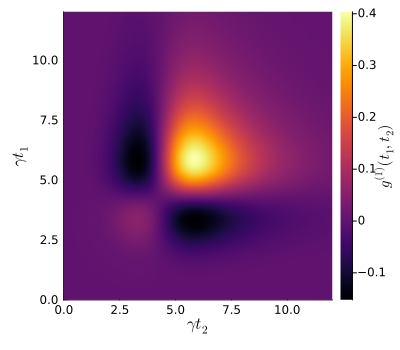
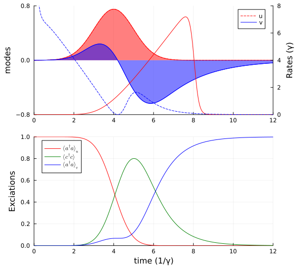
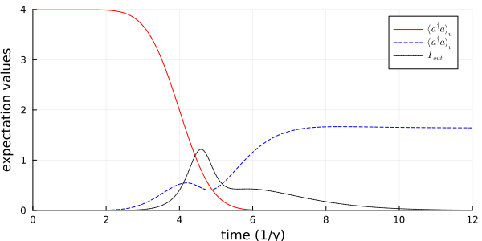

Cavity Scattering of a Single Photon
In this example, we simulate the scattering of a resonant single photon on an empty one-sided cavity. The temporal mode of the light pulse is a Gaussian with width $\sigma$ and the cavity has a decay rate $\gamma$. This system has been studied in A. Kiilerich, et al., Phys. Rev. Lett. 123, 123604 (2019).
We start by loading the needed packages and specifying the model.
using QuantumInputOutput
using SecondQuantizedAlgebra
using QuantumOptics
using QuantumOpticsBase: dagger
using Plots
using LaTeXStrings
using LinearAlgebra# symbolic Hilbert space
hu1 = FockSpace(:u1)
hc1 = FockSpace(:c1)
hv1 = FockSpace(:v1)
h = hu1 ⊗ hc1 ⊗ hv1
# symbolic operators
au = Destroy(h, :a_u, 1)
c = Destroy(h, :c, 2)
av = Destroy(h, :a_v, 3)
# symbolic parameters
@variables g_u::Number Δ::Real γ::Real g_v::NumberWe use the symbolic operators and parameters to define the SLH triples and cascade them to obtain the Hamiltonian and Lindblad for the system.
G_u = SLH(1, g_u'*au, 0) # input cavity
G_c = SLH(1, √(γ)*c, Δ*c'c) # system cavity
G_v = SLH(1, g_v'*av, 0) # output cavity
G_cas = ▷(G_u, G_c, G_v)H = hamiltonian(G_cas)\[ - 0.5 ~ \mathrm{conj}\left( \mathtt{g_{u}} \right) ~ \sqrt{\gamma} ~ \mathit{i} a_{\mathrm{u}}c^{\dagger} - 0.5 ~ \mathrm{conj}\left( \mathtt{g_{u}} \right) ~ \mathtt{g_{v}} ~ \mathit{i} a_{\mathrm{u}}a_{\mathrm{v}}^{\dagger} + 0.5 ~ \mathtt{g_{u}} ~ \sqrt{\gamma} ~ \mathit{i} a_{\mathrm{u}}^{\dagger}c + 0.5 ~ \mathrm{conj}\left( \mathtt{g_{v}} \right) ~ \mathtt{g_{u}} ~ \mathit{i} a_{\mathrm{u}}^{\dagger}a_{\mathrm{v}} - 0.5 ~ \mathtt{g_{v}} ~ \sqrt{\gamma} ~ \mathit{i} ca_{\mathrm{v}}^{\dagger} + \Delta c^{\dagger}c + 0.5 ~ \mathrm{conj}\left( \mathtt{g_{v}} \right) ~ \sqrt{\gamma} ~ \mathit{i} c^{\dagger}a_{\mathrm{v}}\]
L = lindblad(G_cas)[1] # only one Lindblad term in this example\[\mathrm{conj}\left( \mathtt{g_{u}} \right) a_{\mathrm{u}} + \sqrt{\gamma} c + \mathrm{conj}\left( \mathtt{g_{v}} \right) a_{\mathrm{v}}\]
To solve the dynamics of the system we translate the symbolic expressions into numeric operators (matrices) of QuantumOptics.jl. To do so, we define the numerical parameters and operator basis.
# numerical parameters
γ_ = 1.0
Δ_ = 0.0
p_sym = [γ, Δ, g_v]
p_num = [γ_, Δ_, 0] # g_v=0
dict_p = Dict(p_sym .=> p_num)
# Gaussian input mode
σ = 1/γ_
T_end = 12σ
u1(t) = 1/(sqrt(σ)*π^(1/4)) * exp(-(t - 4σ)^2 / (2*σ^2))
T = [0:0.002:1;]*T_end
ΔT = T[2] - T[1]
gu_t = coupling_input(u1, T)
dict_p_t = Dict(g_u => gu_t)
# numeric bases
bu1 = FockBasis(1)
bc1 = FockBasis(1)
bv1 = FockBasis(1)
b = bu1 ⊗ bc1 ⊗ bv1We now use the function to_numeric to create the numeric operators. If the kwarg time_parameter is provided the created operator is a time-dependent function.
H_QO = to_numeric(H, b; parameter = dict_p, time_parameter = dict_p_t)
L_QO = to_numeric(L, b; parameter = dict_p, time_parameter = dict_p_t)To solve the dynamics we use the QuantumOptics.jl function timeevolution.master_dynamic.
# time-dependent function for timeevolution.master_dynamic that returns H(t), J(t) and Jd(t)
function input_output_1(t, ρ)
H = H_QO(t)
J = [L_QO(t)]
return H, J, dagger.(J)
end;
# initial state
ψ0 = fockstate(bu1, 1) ⊗ fockstate(bc1, 0) ⊗ fockstate(bv1, 0)
# time evolution
t_, ρt = timeevolution.master_dynamic(T, ψ0, input_output_1)We create the desired numerical operators to calculate expectation values.
au_qo = to_numeric(au, b)
c_qo = to_numeric(c, b)
av_qo = to_numeric(av, b)
n_c_t = real.(expect(c_qo'*c_qo, ρt))
n_u1_t = real.(expect(au_qo'*au_qo, ρt))In order to determine suitable temporal output modes we calculate the two-time autocorrelation function $g^{(1)}(t_1,t_2) = \langle L_s^\dagger(t_1) L_s(t_2) \rangle$ and diagonalize the matrix to obtain the eigenvalues with the corresponding eigenvectors. The eigenvalues correspond to the mean photon number $n_i$ in the corresponding temporal eigenvector mode $v_i$.
Ls(t) = gu_t(t)*au_qo + √(γ_)*c_qo
g1_m = correlation_matrix(T, ρt, H_QO, [L_QO], Ls)p = heatmap(
T,
T,
real.(g1_m);
c = :inferno,
xlabel = L"\gamma t_2",
ylabel = L"\gamma t_1",
colorbar_title = L"g^{(1)}(t_1,t_2)",
size = (400, 350),
)
p
The eigenvalues and corresponding eigenvectors are sorted in ascending order, which means the last eigenvalue corresponds to the highest populated temporal mode.
F = eigen(g1_m)
n_avg = round.(real.(F.values)*ΔT; digits = 3)
modes = F.vectors
v_mode = (modes[:, end]) / sqrt(ΔT)
@show n_avg[(end-1):end]n_avg[end - 1:end] = [0.0, 0.998]We use now the mode with the highest mean photon number as our out-mode to determine its quantum state.
p_sym_2 = [γ, Δ]
p_num_2 = [γ_, Δ_]
dict_p_2 = Dict(p_sym_2 .=> p_num_2)
# time-dependent coupling for the output mode $v(t)$
gv_t = coupling_output(v_mode, T)
dict_p_t_2 = Dict([g_u, g_v] .=> [gu_t, gv_t])
H_QO_2 = to_numeric(H, b; parameter = dict_p_2, time_parameter = dict_p_t_2)
L_QO_2 = to_numeric(L, b; parameter = dict_p_2, time_parameter = dict_p_t_2)
function input_output_2(t, ρ)
H = H_QO_2(t)
J = [L_QO_2(t)]
return H, J, dagger.(J)
end;
# time evolution for the system including the output cavity
t_2, ρt_2 = timeevolution.master_dynamic(T, ψ0, input_output_2)
# mean photon number in the output mode
n_v1_t = real.(expect(av_qo'*av_qo, ρt_2))p1 = plot(T, u1.(T); ls = :dash, label = "u", color = :red)
plot!(p1, T, u1.(T); fillrange = 0, fillalpha = 0.5, color = :red, label = "")
plot!(p1, T, real.(v_mode); color = :blue, label = "v")
plot!(p1, T, real.(v_mode); fillrange = 0, fillalpha = 0.5, color = :blue, label = "")
plot!(
p1;
xlims = (0, 12),
ylims = (-0.8, 0.8),
yticks = [-0.8, 0, 0.8],
ylabel = "modes",
legend = :best,
)
p1r = twinx(p1)
plot!(p1r, T, abs2.(gu_t.(T)); color = :red, label = "")
plot!(p1r, T[3:end], abs2.(gv_t.(T))[3:end]; color = :blue, ls = :dash, label = "")
plot!(p1r; xlims = (0, 12), ylims = (0, 8), ylabel = "Rates (γ)")
p2 = plot(T, n_u1_t; label = L"\langle a^\dagger a \rangle_u", color = :red)
plot!(p2, T, n_c_t; label = L"\langle c^\dagger c \rangle", color = :green)
plot!(p2, T, n_v1_t; label = L"\langle a^\dagger a \rangle_v", color = :blue)
plot!(
p2;
xlims = (0, 12),
ylims = (0, 1),
xlabel = "time (1/γ)",
ylabel = "Exciations",
legend = :best,
)
plot(p1, p2; layout = (2, 1), size = (600, 550))
Cavity with phase noise
We slightly adapt the above example by assuming the initial pulse to be in a coherent state and adding phase noise to the cavity. This results in scattering into multiple modes.
# new basis of the system
bu1_3 = FockBasis(12)
bc1_3 = FockBasis(6)
bv1_3 = FockBasis(6)
b_3 = tensor(bu1_3, bc1_3, bv1_3)
# new operators of the system
au_3 = embed(b_3, 1, destroy(bu1_3))
c_3 = embed(b_3, 2, destroy(bc1_3))
av_3 = embed(b_3, 3, destroy(bv1_3))
cdc_3 = c_3'c_3
# we use the same Hamiltonian as before but add a depasing term to the dissipation
H_QO_3 = to_numeric(H, b_3; parameter = dict_p_2, time_parameter = dict_p_t_2)
L_QO_3 = to_numeric(L, b_3; parameter = dict_p_2, time_parameter = dict_p_t_2)
function input_output_3(t, ρ)
H = H_QO_3(t)
J = [L_QO_3(t), √(γ_)*cdc_3]
return H, J, dagger.(J)
end;Due to the larger Hilbert space the time evolution takes a few seconds.
ψ0_3 = coherentstate(bu1_3, 2) ⊗ fockstate(bc1_3, 0) ⊗ fockstate(bv1_3, 0)
t_3, ρt_3 = timeevolution.master_dynamic(T, ψ0_3, input_output_3)L0(t) = √(γ_)*c_3 + gu_t(t)*au_3 + gv_t(t)*av_3
I_out = [real(expect(dagger(L0(t_3[i]))*L0(t_3[i]), ρt_3[i])) for i = 1:length(t_3)]
n_u1_t_3 = real.(expect(au'*au, ρt_3))
n_v1_t_3 = real.(expect(av'*av, ρt_3))p = plot(t_3, n_u1_t_3; label = L"\langle a^\dagger a \rangle_u", color = :red)
plot!(p, t_3, n_v1_t_3; label = L"\langle a^\dagger a \rangle_v", color = :blue, ls = :dash)
plot!(p, t_3, I_out; label = L"I_{out}", color = :black, ls = :dot)
plot!(
p;
xlims = (0, 12),
ylims = (0, 4),
xlabel = "time (1/γ)",
ylabel = "expectation values",
legend = :best,
size = (600, 300),
)
p
Package versions
These results were obtained using the following versions:
using InteractiveUtils
versioninfo()
using Pkg
Pkg.status(
[
"QuantumInputOutput",
"SecondQuantizedAlgebra",
"QuantumOptics",
"Plots",
"LaTeXStrings",
],
mode = PKGMODE_MANIFEST,
)Julia Version 1.12.6
Commit 15346901f00 (2026-04-09 19:20 UTC)
Build Info:
Official https://julialang.org release
Platform Info:
OS: Linux (x86_64-linux-gnu)
CPU: 4 × AMD EPYC 9V74 80-Core Processor
WORD_SIZE: 64
LLVM: libLLVM-18.1.7 (ORCJIT, znver4)
GC: Built with stock GC
Threads: 4 default, 1 interactive, 4 GC (on 4 virtual cores)
Environment:
JULIA_PKG_SERVER_REGISTRY_PREFERENCE = eager
JULIA_DEBUG = Documenter
JULIA_NUM_THREADS = auto
Status `~/work/QuantumInputOutput.jl/QuantumInputOutput.jl/docs/Manifest.toml`
[b964fa9f] LaTeXStrings v1.4.0
[91a5bcdd] Plots v1.41.6
[18f9eda6] QuantumInputOutput v0.4.0 `~/work/QuantumInputOutput.jl/QuantumInputOutput.jl`
[6e0679c1] QuantumOptics v1.2.6
[f7aa4685] SecondQuantizedAlgebra v0.10.0This page was generated using Literate.jl.